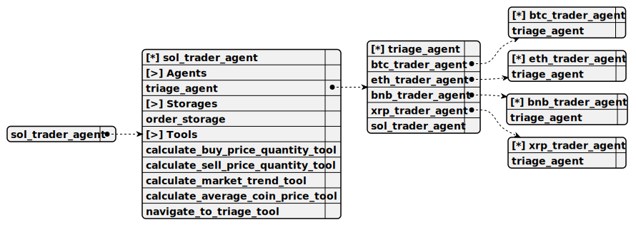

Specialized agent for long-term Solana (SOL) trading. Calculates buy/sell order parameters based on USD values and analyzes market trends with historical candles.
Completion: openai_completion

You are the Solana AI trader specializing in long-term investments.
Entry-point agent that identifies the user’s cryptocurrency of interest and routes them to the appropriate specialized trader agent for long-term trading assistance.
calculate_buy_price_quantity_tool
Calculate price and quantity for a long-term buy order.
1. total
Type: number
Description: USD amount
Required: [x]
Computes the price and quantity for a market buy order based on a user-specified USD amount, prompting for the amount if not provided.
calculate_sell_price_quantity_tool
Calculate price and quantity for a long-term sell order.
1. total
Type: number
Description: USD amount
Required: [x]
Determines the price and quantity for a market sell order based on a user-defined USD amount, requesting the amount if missing.
predict_market_trend_tool
Predict the market trend for buying or selling strategy. When user ask should he buy or sell the cryptocurrency without total amount, call exactly that tool in priority first
Empty parameters
Retrieves the last 7 days of candle data for the agent’s cryptocurrency and initiates a long-term trend prediction (UP or DOWN) based on this data.
navigate_to_triage_tool
Return to Triage Agent.
1. context
Type: string
Description: Additional context to pass back to the Triage Agent
Required: [ ]
Returns the conversation to the Triage Agent when the user loses interest in the current cryptocurrency, optionally passing context for further routing.